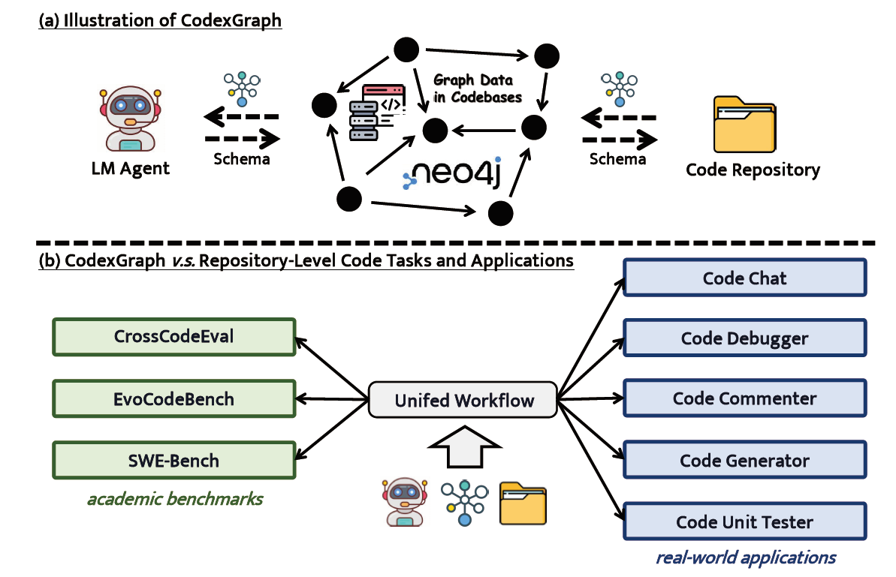
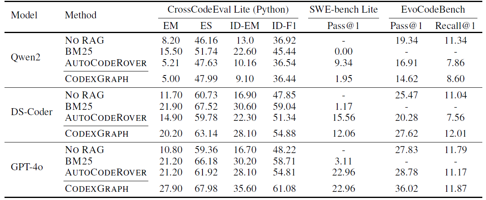
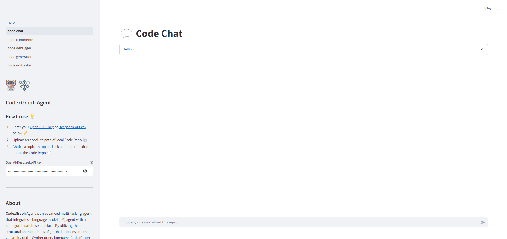
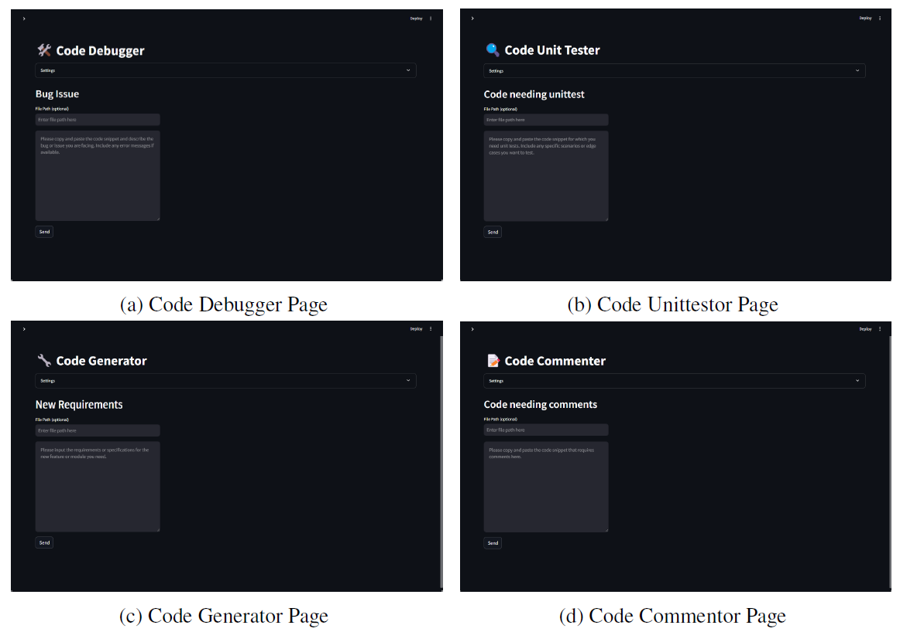

Introduction
we introduce CodexGraph, a system that integrates LLM agents with graph database interfaces extracted from code repositories. By leveraging the structural properties of graph databases and the flexibility of the graph query language, CodexGraph enables the LLM agent to construct and execute multi-hop queries, allowing for accurate, code structure-aware context retrieval and code navigation.
Results
Real-world Applications
we develop five real-world coding applications based on CODEXGRAPH. With a unified graph database schema, CODEXGRAPH demonstrates competitive performance across diverse academic tasks and highlights its potential application value in real production environments, underscoring its versatility and efficacy in various software engineering applications.
 Citation
@inproceedings{example,
title={Example Title: An Example of a Research Paper Citation},
author={Doe, John and Smith, Jane and Roe, Richard and Black, Alice and White, Bob},
booktitle={Proceedings of the Example Conference on Example Research},
year = {2024},
}